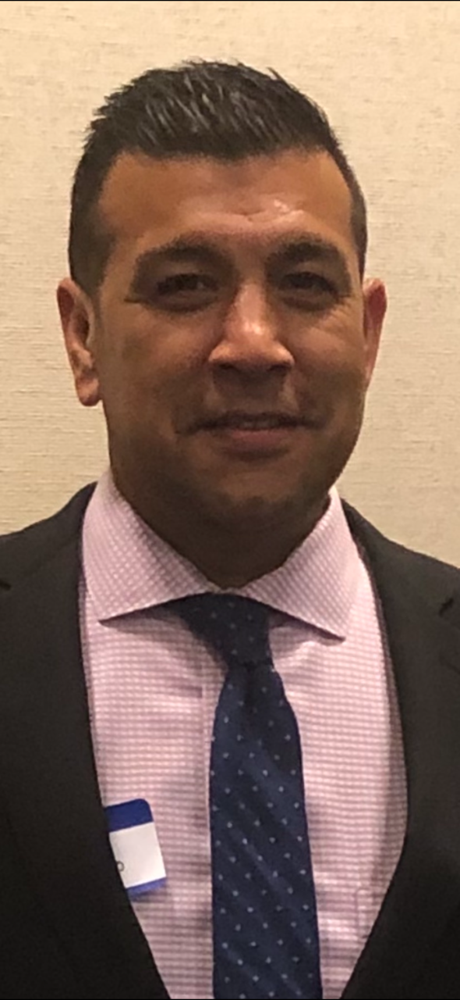

Thoughtful, evidence-based therapy for adults navigating anxiety, trauma, addiction, grief, and life transitions. In-person in Boca Raton and secure telehealth across Florida and New Jersey.
Whether something feels suddenly off or has been building for years, therapy can help you move through it with more clarity, tools, and self-compassion.
Quiet the noise, understand your nervous system, and build practical tools to feel steady again.
Process what happened in a grounded, safe pace — without re-living it — so it stops running the show.
Whether you're questioning your relationship with substances or deep in recovery, meet a therapist who gets it.
Work through loss — of a person, an identity, a chapter — without rushing or pretending you're fine.
Career shifts, relationship changes, parenting, retirement — navigate thresholds with support and intention.
Reconnect with yourself beyond the roles you play and the expectations you've been carrying for others.
Therapy should feel like a real conversation — one where you're actually heard, not just assessed. Sessions draw from evidence-based modalities and are tailored to what you need, when you need it.
Identify thought patterns that keep you stuck and build practical strategies to change them.
A pace and framework that honors what your body and mind have carried, without re-traumatization.
A collaborative approach especially well-suited for ambivalence around substances and change.
Pulling from what works — mindfulness, psychodynamic insight, and strengths-based practice.

With more than 25 years in behavioral health, Sergio brings the depth of a seasoned clinical leader and the warmth of someone who genuinely loves this work. He's sat with clients navigating the full spectrum of mental health and substance use challenges — and he meets each person where they are.
His practice is grounded in ethical, evidence-based care with an unwavering belief that healing is possible when people feel truly seen. Sessions are collaborative, paced to your comfort, and focused on helping you build a life that feels like your own.
Self-pay clients enjoy complete flexibility — no diagnosis required on your record, no insurance limits on session length or frequency, and full privacy around your care.
Session rates are discussed during your free consultation so we can match the right fit for your goals and schedule.
Sergio is in-network with select major insurance providers. If you'd like to use your benefits, we'll confirm coverage and copay details before your first session.
Both. In-person sessions are available in Boca Raton, Florida. Secure telehealth sessions are available to any resident of Florida or New Jersey.
It's a short, no-pressure phone conversation — usually 15 minutes. You'll share what brought you in, ask any questions you have, and decide together whether it feels like a good fit. There's no obligation to book after.
Standard individual sessions are 50 minutes. Most clients begin weekly, then taper to every other week or monthly as progress is made. We'll find a cadence that fits your life and your goals.
Yes. Everything discussed is confidential and protected by law, with a few legally required exceptions (imminent danger to self or others, suspected abuse of a minor or vulnerable adult). These limits are explained fully at your first session.
This practice is not a crisis or emergency service. If you are in immediate danger or thinking about harming yourself, please call or text 988 (Suicide & Crisis Lifeline) or call 911 right away.
Fill out the short form and Sergio will follow up personally — usually within one business day — to schedule your free 15-minute consult call.
Serving: Boca Raton, FL (in-person) and all of Florida & New Jersey (telehealth)
Response time: Within one business day, Monday through Friday.